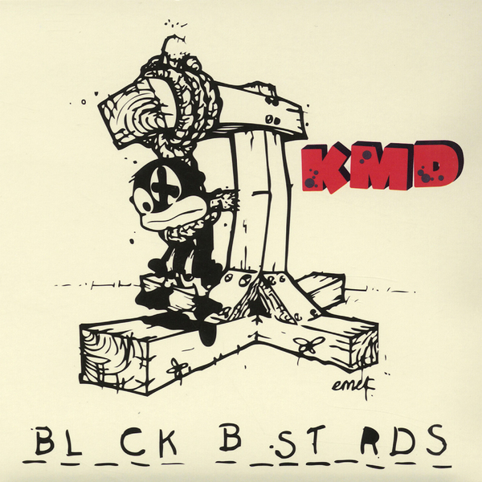

Born on 9th of January 1971 in London, son of a Trinidadian mother and a Zimbabwean father, his family moved to the United States (Long Island, NY) when he was really young. Then, he started doing his first songs under the name Zev Love X. After a while in he formed a group called KMD (acronym for Kausing Much Damage) with his brother (a.k.a. DJ Subroc) and MC Rodan.
They began their career by releasing Mr. Hood, a minor hit with its singles "Peachfuzz", "Who Me?" and airplay on both local radio stations and even MTV. For the sophomore project, the group were going in a different direction, with harder, more abrasive and socially charged songs, examplified by the artwork chosen for the album, which depicts a sambo character being hanged, with the title being Black Bastards.

And it was that same cover that prevented the album from being released, with the discographic companies shelving it to try and avoid controversy. In what was a tragic week for Dumile, the group KMD ceased to exist, with the death of his brother in a traffic accident.
Due to the bad circumstances that he was going through, Dumile decided to retire from music, at least temporarily, in a hiatus that would extend from 1993 to 1997. During those years he lived from small time jobs, but endured an overall very rough life, having to sleep on the streets and having barely any future prospect.